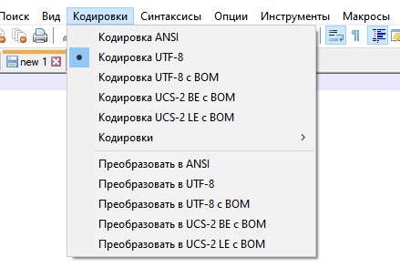
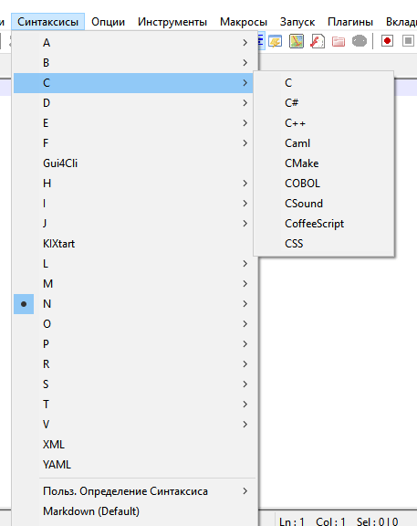

Notepad++
Notepad++, он же Notepad Plus Plus — это текстовый редактор,
который можно использовать и для работы с текстами, и для написания
и редактирования кода. Он похож на обычный «Блокнот», но функциональнее.
Не стоит путать Notepad++ с обычным Notepad: так называют «Блокнот»,
программу, которая по умолчанию есть в операционной системе Windows.
«Блокнот» очень простой, по сравнению с ним Notepad++ куда мощнее и удобнее.
Иногда Notepad++ используют в качестве редактора кода.
Так он стал известен среди разработчиков. Сейчас, несмотря
на обилие IDE и специализированных редакторов, Notepad++
все еще используют для специфических языков программирования и сред.
Название придумали по аналогии с языком C++:
тот был похож на C, но расширял его возможности.
То же самое можно сказать про «Блокнот» и Notepad++ — его расширенный вариант.
По-русски название читается как «ноутпад-плас-плас», реже его читают как «нотепад-плюс-плюс».
Возможности Notepad++
Обилие форматов и кодировок.
Notepad++ поддерживает огромное количество форматов, в которых можно сохранить файл. Это не только текстовые форматы, но и те, в которых сохраняется код на разных языках. Кроме непосредственно программ, он позволяет сохранять верстку, разметку для текстов и другие данные. В нем по умолчанию поддерживается несколько десятков форматов для разных технологий.Кроме того, в редакторе по умолчанию есть поддержка наиболее популярных кодировок. В разных системах символы кодируются по-разному. Если скопировать текст в одной кодировке в редактор или браузер, который поддерживает другую, получится нечитаемый набор символов. Notepad++ можно переключать между кодировками, чтобы работать с разным контентом. Для некоторых кодировок доступен перевод из одной в другую. Это может быть важно для веба.

Подсветка синтаксиса
Эта возможность делает Notepad++ ближе к редактору кода, чем к текстовому. Редакторы кода умеют подсвечивать определенные конструкции в коде: так он легче читается, в нем проще найти нужные моменты. Это называется подсветкой синтаксиса.В Notepad++ есть поддержка и подсветка синтаксиса внушительного количества языков. При написании кода можно выбрать в меню синтаксис, которым вы пользуетесь: там есть десятки вариантов, в том числе для редких языков.

Подсветка синтаксиса
Atom автоматически подсвечивает синтаксис для различных языков программирования, что делает код более читабельным и помогает быстро находить ошибки. Подсветка синтаксиса может быть настроена для работы с различными темами, что позволяет сделать код более удобным для восприятия.Автодополнение кода
Функция автодополнения кода в Atom помогает ускорить процесс написания кода, предлагая варианты завершения строк и функций. Это особенно полезно для новичков, так как позволяет избежать ошибок и ускоряет процесс обучения. Автодополнение также поддерживает пользовательские словари и может быть настроено для работы с различными языками программирования.Что не может делать Notepad++
Тем не менее редактор довольно ограничен по сравнению с профессиональными инструментами для написания кода. Его стоит рассматривать как улучшенный «Блокнот», а не как полноценную IDE. Многого из того, что есть в средах программирования, там нет. Более того, возможности текстовых редакторов вроде Word или Google Docs он тоже не повторяет. Вот несколько примеров вещей, которые не может Notepad++.
Работать с проприетарными форматами.
Большинство форматов, в которых сохраняют код, свободные. Их в Notepad++ использовать можно, более того, они есть в нем по умолчанию. А вот среди текстовых форматов довольно много проприетарных, например RTF или DOCX. В таких форматах текст из этого редактора сохранить не получится.Форматировать текст через визуальный редактор.
Программа с таким интерфейсом называется визуальным редактором или WYSIWYG-редактором (аббревиатура от What You See Is What You Get — что видишь, то и получишь). Это удобно, если вы работаете с текстами, но в редакторах кода такие возможности встречаются редко. В Notepad++ их тоже нет.Открывать слишком большие файлы.
Редактор создавался для промежуточной работы с кодом и для внесения правок. Он легкий и небольшой. Открывать в нем большие файлы проблематично: можно столкнуться со встроенным ограничением на их размер. В версии x32 максимальный объем файла — 4 Гб, но 2 Гб из этого объема система резервирует на процессы. Остается 2 Гб, но фактический возможный размер еще меньше, потому что для каждого байта текста передается дополнительная информация.Работать с Git.
Notepad++ не поддерживает Git и не может с ним интегрироваться. Это отличает его от современных IDE и редакторов кода: они зачастую умеют контролировать версии непосредственно через собственный интерфейс. А вместо команд в консоли в редакторах можно нажать несколько кнопок. Notepad++ так не может. Для использования Git понадобится открывать консоль и работать с системой контроля версий через нее.